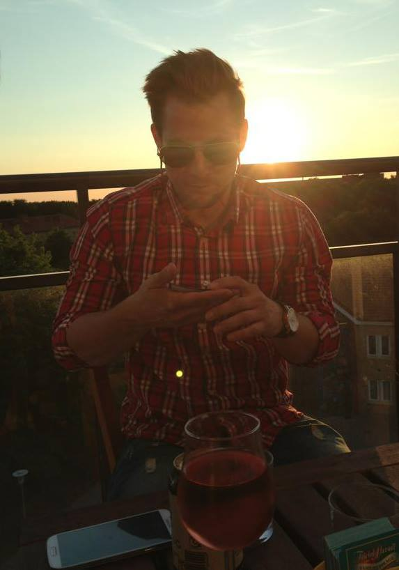

Vem är då jag ?
Mitt namn är Jens Ax. Mina intressen är att sporta och sitta vid datorn. Min familj är i skåne och härjar med de få snapphanarna som lever kvar i skogarna. Det är min far och min mor och även en syster som tyvärr gått och gift sig med en tatuerad snapphane.
Saker som jag är bra påär att vara snäll och omtänksam. Jag är glad och kreativ och gillar människor. Säker jag är sämre på är att jag har dåligt tålamod. Det måste hända saker hela tiden
Har du tidigare programmerat?
- Jag har läst webbdesign för några år sedan och tyckte att det var jätteroligt.
Jag lärde mig då php, css, flash och mycket mer. Dock var det html v.4 som jag lärde mig, så att inte slubbla på dem gamla kommandona kommer att bli en utmaning vill ja tro. 
Jag sökte utbildningen för at jag är teknikintresserad och just intresset för webbdesign och programmering. Att interaktionsdesign-programmet är inriktat på människan gör det hela trevligare då jag även tycker att människan är intressant.
Framtidstankar i punktform
- Jobba med tekniken
- för att det är kul
- Ha en utbildning
- bättre lön än CSN
- Kunna få peka med hela handen